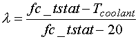
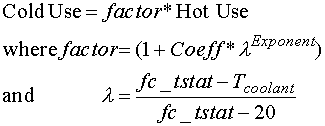
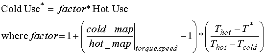

Eqn 2
Eqn 2
Updating ADVISOR’s CI Engine Cold-to-Hot Fuel Use and Emissions Predictions Based on ORNL’s Test Data on VW 1.9L and Mercedes 1.7L Engines
January 2001
Introduction
Experimental Cold-to-Hot Correction Factors
Conclusions
New ADVISOR Cold-to-Hot Engine Map Correction Factors
Option 1: Change the values of ADVISOR’s Cold-Hot Adjustment Factors
Option 2: Correction Factors as Functions of Speed and Torque, in addition to Temperature through l, Map Fits Based on Trends
Option 3: Cold Maps Input by User
Previous ADVISOR cold-to-hot engine fuel and emissions penalties are based on data generated by Dill Murrell in 1994. This testing covered SI engines, and was extrapolated based on vehicle performance over cycles (e.g. FTP). The penalties are determined by the following equations.
Equation 1 defines a normalized temperature factor (l) related to the thermostat set point of the coolant (fc_tstat) and the dynamic coolant temperature (Tcoolant).
 Eqn 1
where temperatures are in degrees C. For example, if the coolant temperature were 20° C (cold engine), l would be 1, and if the engine were at the set point of 95° C (hot engine), l would be zero.
The fuel and emissions are then computed by the following equation:
Eqn 2
Dill Murrell did not perform experiments on a CI engine, so there was no experimental curve fit available for PM. Therefore, PM was assumed to have the same characteristics as HC.
These correction factors were applied across the entire torque-speed map for each of the five variables of interest in Equation 2. This constant factor approach introduced significant error, as the ratio of cold-to-hot usage varied throughout a given map.
Data collected at Oak Ridge National Laboratory on two CI engines showed discrepancies between ADVISOR’s current cold-to-hot correction factors and actual operating conditions. This data also created previously unknown PM correction factors for ADVISOR.
Experimental Cold-to-Hot Correction Factors
ORNL produced steady-state engine maps (fuel use, HC, CO, NOx, PM) for two engines over two scenarios: 1) a hot engine, and 2) an engine that was force cooled with water. ). The experiments were performed on a Volkswagen 1.9L TDI diesel engine and a Mercedes A 1.7L diesel engine. The VW engine was held at 21.1° C (70° F) for scenario 2 (cold), and the Mercedes engine was held at 32.2° C (90° F). With an assumed typical coolant set point of 95° C, ADVISOR’s normalized temperature, l, was 0.985 for VW and 0.837 for Mercedes (see Equation 1). For convenience, the Volkswagen engine will be noted by VW and the Mercedes engine will be noted by MB.
For the VW engine, force-cooled data was taken over the entire map (800-4400 rpm). For the MB engine, cold data was taken only over the low speed region (1200-2800 rpm). To keep the map in context, the MB graphs have an x axis which corresponds to the entire engine operating region (1200-4200 rpm).
The current predictions by ADVISOR are shown at the top of each graph presented below.
ADVISOR predicts a cold-to-hot factor of 1.95 (VW) and 1.58 (MB). Figure 1 shows that for most of the fuel use map, the ratio does not exceed 1. Only at very low torque outputs does the fuel use increase; the maximum increase is ~30%. Figure 2 shows that for high torques, the cold penalty is ~3%, and for low torques the penalty can again reach 30%. Therefore, ADVISOR is currently over predicting fuel use at cold temperatures.
Figure 1: VW Fuel Use Cold to Hot Ratio
ADVISOR predicts cold-to-hot factors of 8.07 (VW) and 5.3 (MB). Figure 3 shows that for a large range on the HC map, the ratio is 1, i.e. no additional emissions over the hot levels are expected when the engine is cold. However, the HC map has an island near 2800 rpm and 150 Nm where up to 30 X the hot emissions were seen. At low torque outputs, the ratio also increased up to 50 X. The MB map shows less sensitivity to temperature (Figure 4), as the ratio was 1.25-2 for high torques and 4X for low speed-low torque combinations. In comparison to the current ratio of 8 (VW), ADVISOR could be over or under predicting HC emissions, depending on where in the map the engine was operating. On the MB engine, ADVISOR is over-predicting HC emissions.
Figure 3: VW HC Cold to Hot Ratio
ADVISOR predicts cold-to-hot factors of 9.96 (VW) and 6.3 (MB). Figure 5 and Figure 6 show that this is over predicting cold CO emissions. For VW, the maximum ratio reached at low torque outputs was near 7, with a large section lying near 3. For MB, the maximum was near 3.5 with a large area near 1.25. For most of the VW map, the ratio is lower than one. This means that emissions at cold temperatures were lower than emissions at high temperatures. This behavior is counter-intuitive, but could have many causes, including: 1) experimental error, and 2) that the behavior observed is real, and that CO emissions are lower at colder temperatures at high speed/torque ranges.

Figure 5: VW CO Cold to Hot Ratio
ADVISOR predicts cold-to-hot factors of 1.54 (VW) and 1.16 (MB). For a large section of the map, Figure 7 shows that ADVISOR is over-predicting NOx emissions. However, at low torque-speed points, the ratio reached a maximum near 2.5. As with the CO map, the VW ratio is less than one for speeds above ~2000 rpm, though data was not available for this area of the MB map. Figure 7 shows that NOx emissions are substantially lower (0.25X) than hot emissions at high speeds. For the MB map in Figure 8, ADVISOR’s prediction is close to observed behavior.

Figure 7: VW NOx Cold to Hot Ratio
ADVISOR predicts cold-to-hot factors of 8.07 (VW) and 5.3 (MB). This was based on the assumption that the PM emissions responded in the same manner as the HC emissions, as data was previously unavailable. Figure 9 and Figure 10 show that ADVISOR is over predicting PM emissions at low temperatures, as most of the VW map does not show any increase in PM with temperature and the MB map shows a factor ranging from 1-2X. However, the VW map in the low speed/low torque range shows PM emissions increase drastically, with ratios reaching 20 X.
Figure 9: VW PM Cold to Hot Ratio
Exhaust Temperature
ADVISOR does not currently predict a cold-to-hot factor for exhaust temperature. Figure 11 and Figure 12 confirm this omission, as the ratio over most of the map is 1.

Figure 11: VW Exhaust Temperature Cold to Hot Ratio
Exhaust Flow
ADVISOR does not currently predict a cold-to-hot factor for exhaust flow. Figure 13 and Figure 14 again mostly confirm this, as the ratio is near 1.
Figure 13: Exhaust Flow Cold to Hot Ratio
The comparisons of hot-to-cold engine maps showed that a constant adjustment factor over the entire speed-torque maps results in erroneous predictions. The graphs above (Figure 1 through Figure 14) show that the cold-to-hot ratios can vary substantially through the torque-speed map.
Table 1 shows the Cold-to-Hot factors in the current ADVISOR model and the range shown by the data.
Table 1: Correction Factors–ADVISOR Predictions and Data Ranges
|
Parameter |
ADVISOR Factor |
Factor Range from Data |
||
|
VW |
MB |
VW |
MB |
|
|
Fuel Use |
1.95 |
1.58 |
0.9-1.3 |
1.03-1.3 |
|
HC |
8 |
5.29 |
0.5-50 |
1.25-4 |
|
CO |
10 |
6.32 |
0.5-7 |
1-3 |
|
NOx |
1.5 |
1.16 |
0.25-2.5 |
0.8-2.2 |
|
PM |
8 |
5.29 |
1-20 |
1-2.5 |
|
Exhaust Temperature |
N/A |
N/A |
0.6-1.6 |
0.8-0.95 |
|
Exhaust Flow |
N/A |
N/A |
1-1.3 |
1-1.3 |
This shows that ADVISOR is currently over predicting cold fuel use and CO emissions. HC, NOx, and PM emissions are over predicted for a majority of the operating points on the maps, but may be under predicted in other areas. Additionally, some emissions (e.g. NOx) showed lower emissions at cold temperatures than hot. ADVISOR’s constant adjustment factors do not drop below one, such that this type of behavior is unaccounted for.
New ADVISOR Cold-to-Hot Engine Map Correction Factors
To address these differences between the data and the current cold-to-hot usage model in ADVISOR, three options were explored.
Of the three options, options 2 and 3 are the most comprehensive. Option 1 was explored as a simple baseline case to increase the accuracy of ADVISOR while development on the other two occurred.
Option 1: Change the values of ADVISOR’s Cold-Hot Adjustment Factors
The form of the equation (see Equation 2) relating cold engine outputs to hot outputs was assumed to be the same, and the variable parameters were updated. As a reminder, the form is as follows:
 Eqn 3
Updated values for Coeff and Exponent could be obtained by assuming a constant factor by using the factor maps available for two different l values (VW: l=0.985 MB: l=0.837). In order to have a first-pass guess at which factor values to assume from the maps, a simple simulation of a conventional vehicle over the FTP was performed (default conventional with ADVISOR 3.1 with the FC_CI60_emis engine chosen). The locus of operating points on the engine is shown in Figure 15. A large majority of the points lie below 2500 rpm and 100 Nm, with a concentration below 1500 rpm and 50 Nm. Of course this will vary with the chosen shift schedule, but this behavior was taken as representative.

Table 2 shows the assumed values for the factors and the resulting values for the Coeffand Exponent in Equation 3. The ‘previous’ values for Coeffand Exponenare also shown for reference.
Table 2: Assumed Correction Factors, Updated and Previous Coeff’s and Exponents
|
Factor from Data |
Previous Factor |
Updated |
Previous |
||||||
|
VW |
MB |
VW |
MB |
Coeff |
Exponent |
Coeff |
Exponent |
||
|
lambda |
0.985 |
0.837 |
|||||||
|
Fuel |
1.1 |
1.09 |
1.95 |
1.58 |
0.10 |
0.65 |
1 |
3.1 |
|
|
HC |
8 |
2.5 |
8.07 |
5.3 |
8.05 |
9.46 |
7.4 |
3.072 |
|
|
CO |
3 |
2 |
9.96 |
6.3 |
2.13 |
4.26 |
9.4 |
3.21 |
|
|
NOx |
1.5 |
1.4 |
1.54 |
1.16 |
0.51 |
1.37 |
0.6 |
7.3 |
|
|
PM |
5 |
1.25 |
8.07 |
5.3 |
5.14 |
17.04 |
7.4 |
3.072 |
|
The following points were noted in the assumed values for each factor:
The notes for each parameter show that this approach, while an improvement over the previous values listed in ADVISOR, are still not very accurate.
Option 2: Correction Factors as Functions of Speed and Torque, in addition to Temperature through l, Map Fits Based on Trends
The implementation of correction factor maps was postponed until implementation of Option 3.
Option 3: Cold Maps Input by User
The user has the ability to enter cold engine maps, if the data is available. The two engines tested at ORNL have their maps available in ADVISOR (FC_CI60_emis for the Mercedes engine and FC_CI67_emis for the Volkswagen engine).
The engine input m-files have new variables denoted by *_cold for cold maps (e.g. fc_fuel_map_cold). These are processed to determine a cold-to-hot ratio map denoted by *_c2h (e.g. fc_fuel_map_c2h). These ratios and the temperature of the cold testing (fc_cold_tmp) are used to determine the cold use by the following equation (a linear relationship between the temperature and change in use is assumed):
 Eqn 4
Simulations were run on a conventional vehicle to determine the effect of using the map-based approach (Option 3) instead of the constant ratio equation-based approach (Option 1). A default conventional vehicle with the VW and then the MB engine was ran over a cold FTP cycle. Note: to select the ‘equation’ correction (based on Equation 3), set the variable fc_cold=0, and to select the ‘cold map’ correction option. Table 3 shows the large differences that can be seen in the different approaches. Using the map-based approach had a 1-2% effect on fuel economy, and up to 53% effect on emissions. Using the cold maps for interpolation is much more accurate than the equation-based approach.
Table 3: Equation vs. Map Based Cold Corrections over an FTP
|
MPG |
HC |
CO |
NOx |
PM |
||
|
Volkswagen |
Equation |
44.4 |
0.349 |
1.751 |
0.734 |
0.049 |
|
Cold Map |
44.8 |
0.731 |
2.321 |
0.698 |
0.065 |
|
|
% difference |
0.9% |
52.3% |
24.6% |
-5.2% |
24.6% |
|
|
Mercedes |
Equation |
46.1 |
0.609 |
1.812 |
1.027 |
0.073 |
|
Cold Map |
45.1 |
0.63 |
2.106 |
0.927 |
0.061 |
|
|
% difference |
-2.2% |
3.3% |
14.0% |
-10.8% |
-19.7% |
|
|
* Simulation: |
Conventional default, then engines specified, |
|||||
|
cold FTP cycle (not test procedure) |
||||||
Last Revised: 02/01/01: VHJ